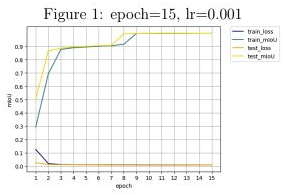
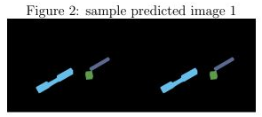
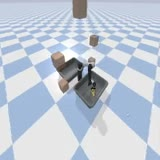
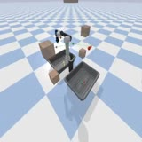
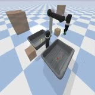

I connected segmentation and RGB-D geometry to grasping and placement in PyBullet. The archived coursework preserves a controlled segmentation evaluation and a practical failure case: an overly complex planned motion can still lose the object in transit.
Original simulation demonstration from my Columbia project.
The task: turn a visual estimate into an executable action
My Columbia coursework connected the stages of a visual manipulation pipeline: identify an object, estimate its geometry and pose, select a manipulation action, and execute the move in simulation. The visible object label is only the beginning; the arm needs a spatially grounded target and a workable path.
I implemented segmentation and point-cloud-based pose estimation and integrated the identification, grasping, and placement workflow in PyBullet. The work used course environments and established approaches to visual affordances and action prediction.
01 · PerceiveSegment the RGB-D scene
Identify object pixels and recover their 3D geometry.
02 · EstimatePoint-cloud pose
Relate the observed object to the manipulation workspace.
03 · ChooseA grasp and a path
Connect an action target to an arm movement.
04 · ExecutePick, move, and place
Check what happens to the object during physical simulation.
A retained segmentation experiment
The Homework 3 report records 500 examples: 450 for training and 50 for testing. Its reported setting uses 15 epochs and a learning rate of 0.001, with a test loss of 0.01 and mean IoU of 1.0 on that course split.
These values measure the segmentation component in a controlled simulation exercise. They are separate from end-to-end grasp or placement success. The curve and prediction example below are retained figures from that report.

Homework 3, Figure 1: the archived learning curve. Captured from the original report; the retained figure has limited resolution.

Homework 3, Figure 2: the first reported mask example from the test set.
Follow the manipulation preview
The short original preview at the top of this page shows the arm moving objects among obstacles and a collection tray. It provides a visual record of the integrated simulation. The individual frames below make the approach, grasp, and transport stages easier to inspect.

Approach · 0.4 s

Grasp / lift · 1.2 s

Transport to tray · 3.4 s
A failure that changes the planning problem
The same coursework report records an important implementation problem: overly complex random paths could make the object fly out of the gripper. Slowing the movement helped, but interacted with a time/skip problem in the exercise. I instead constrained the sampling range to obtain a more stable motion.
This is a concrete distinction between a geometric plan and a physically reliable action. Grasp retention and execution dynamics can invalidate a path even when perception has identified the correct object. The report preserves this debugging observation; the short preview is not a recording of that failure.
A debugging chain documented in the course report.
Observed problem
Change made
Practical lesson
Object lost during complex sampled motion
Constrained random sampling for stability
Execution must preserve the grasp.
Slower motion interacted with timing / skipped execution
Used a more restricted path-search range
A fix must respect the surrounding system constraints.
My implementation and the methods behind it
My work was to implement and connect the perception and execution components in the coursework: train segmentation, recover pose from point-cloud information, integrate the PyBullet manipulation loop, and debug the motion behavior.
Visual affordances, spatial action representations, and action regression were established approaches studied in the course. I use them here as methodological context for my implementation. The project’s contribution to my later research was learning how errors propagate across the perception-to-action boundary.
Perception needs to provide geometry that an action can use.
An executable path still depends on grasp stability and control conditions.
Separate component metrics from full-task outcomes when evaluating a pipeline.
From this project to actionable spatial beliefs
The project helped form the question behind Seeing What Matters: does the robot have the particular evidence that makes its intended action possible? A correct scene interpretation, a pose estimate, and a plan each solve a different part of that problem.
I now study how the agent can identify the missing assumption, acquire useful evidence, and revise the affected belief after execution disagrees with its prediction.
Outcomes
An integrated perception-to-execution pipeline in PyBullet.
A retained segmentation evaluation with an explicit course-data split.
Documented motion-debugging experience linking grasp stability to planning decisions.
I assembled a 3D-printed Arm-200 platform and am developing a coffee-making manipulation system. It is a concrete setting for studying which evidence a robot needs before acting and what execution failures reveal about its assumptions.
I helped turn a manipulation-research direction into an experimental setup: research planning, lab setup, an initial prototype, simulation experiments, and tests on physical robot arms.